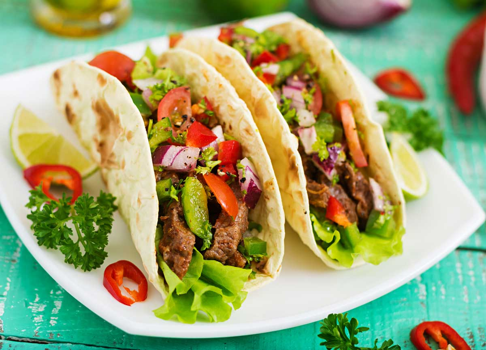

Tacos Recipe

Tacos are a traditional mexican meal, which concists of a tortilla filled up with various ingredients, like pork, beef, salads of sauces. It's usually the main dish, though there are occations where it is served as an entrance.
Ingredients
- Ground beef
- Sauces (of preference)
- Taco shells
- Shredded lettuce
- Tomato
- Cheddar cheese
Steps
- Cook the beef for 8 to 10 minutes
- Add salsa and stir for 5 minutes
- Pour into serving bowl
- Heat taco shells
- Pour the prepared mix over the taco shell
- Serve!